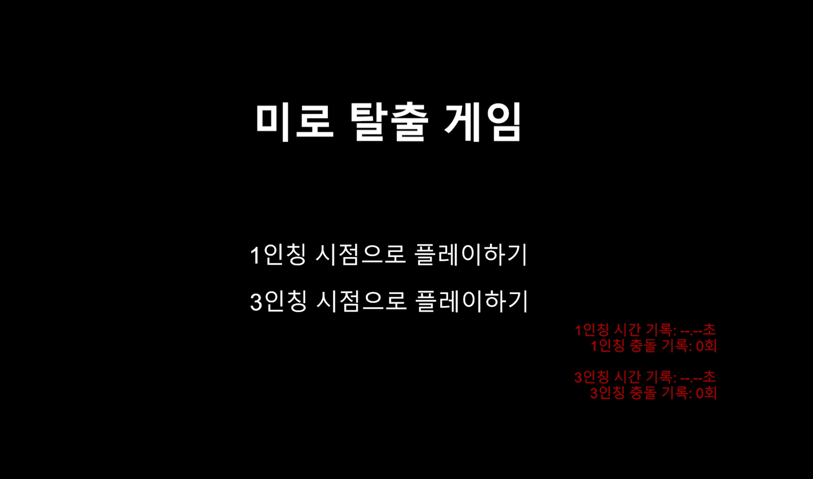

프로젝트 개요
본 프로젝트는 3D 환경에서 사용자가 느끼는 시계(FOV)와 정보량의 변화가 공포감 및 조작 수행도에 미치는 영향을 탐구하기 위해 기획되었습니다.
단순한 게임 제작을 넘어, 1인칭(1PP)과 3인칭(3PP) 시점의 실험 대조를 통해 유의미한 UX 데이터를 도출하고, 이를 바탕으로 실제 게임의 인터페이스와 난이도를 최적화하는 전 과정을 수행했습니다.

3인칭 시점 주행 및 UI 인터페이스
연구 설계 및 가설
연구 질문 (Research Questions)
- RQ1. 시점에 따른 공간 정보 습득 차이가 과업 수행도에 미치는 영향은 무엇인가?
- RQ2. 1인칭의 자기 존재적 고립감 vs 3인칭의 관찰적 위협 중 어떤 심리적 기제가 공포를 극대화하는가?
- RQ3. 공포 유발 요소가 유발하는 의도된 불편함과 불필요한 피로도 사이의 임계점은 어디인가?
- RQ4. 사용자의 게임 숙련도에 따라 시점별 공포 체감도와 수행도의 상관관계가 달라지는가?
실험 자극물 설계
동질성 확보를 위한 시종점 반전 맵
붉은 점멸, 추격자 접근 연출, 심리적 BGM 및 효과음
물리적 벽, 충돌 감지 양동이 등 다차원 트랩 배치
"연구 질문에 답변하기 위해 정교하게 설계된 3D 주행 환경 구축"
핵심 개발 로직 & Implementation
연구 설계에 기반하여, 각 시점별 특징을 극대화하고 공포 기제를 제어하기 위한 핵심 시스템을 구현했습니다.
# Rigidbody 기반 차량 물리
실시간 선형 속도와 각속도 제어를 통해 반응성 높은 주행 시스템을 구축했습니다. 특히 부드러운 정지 로직을 통해 연구의 탈출 완료 시점에서의 사용자 경험을 고도화했습니다.
# 비동기 경고 피드백 시스템
추격자와의 거리에 따라 코루틴(FlashRedScreenLoop)을 실행하여 공포감을 시각적으로 전이합니다. 비동기 처리를 통해 연출 중에도 주행 조작이 끊기지 않도록 설계했습니다.
# 스마트 카메라 트래킹
1PP/3PP 실험 조건에 맞춘 유연한 대응을 위해 SmoothDamp 트래킹 시스템을 구현했습니다. 특히 충돌 시 카메라 셰이크를 적용하여 불필요한 피로도 연구 데이터를 수집하는 지표로 활용했습니다.
사용성 평가 및 데이터 분석
참여자 정보 및 실험 설계 (N=8)
데이터 편향 방지를 위해 8명을 대상으로 Counterbalancing(1PP/3PP 선행 순서 교차) 실험을 진행했습니다.
특히 동일한 맵 환경에서 발생할 수 있는 학습 효과를 배제하고자 시작점과 탈출 지점을 반전시키는 시종점 반전 방식을 적용하여 조건 간 난이도 형평성을 엄격히 통제했습니다.
| 구분 | 나이/성별 | 게임 경험 | 3D 울렁증 여부 | 공포 장르 선호도 |
|---|---|---|---|---|
| P1 | 25세 / 남 | 주 3회 (PC/모바일) | 있음 (심함) | 즐기지 않음 (개연성 중시) |
| P2 | 29세 / 여 | 거의 안 함 | 없음 | 즐기지 않음 |
| P3 | 31세 / 여 | 매일 3시간 | 없음 | 매우 싫어함 |
| P4 | 35세 / 남 | 매일 (헤비 유저) | 있음 (1인칭 FPS 불가) | 싫어함 |
| P5 | 22세 / 여 | 많이 안 함 | 없음 | 보통 |
| P6 | 23세 / 여 | 주 4회 (모바일) | 있음 (3D 안경 착용 시) | 무서워함 |
| P7 | 23세 / 여 | 자주 함 (모바일) | 없음 | 즐기지 않음 |
| P8 | 22세 / 여 | 자주 함 (PC 3D) | 없음 | 좋아하지 않음 |
플레이 목표에 따른 시점 선택 (N=8)
* 성능(속도): 8명 전원이 3인칭 선택. 정보량 지각 우위가 명확함.
* 공포(재미): 6명이 1인칭 선택. 고립감과 갑작스러운 상황에 대한 압박감이 높음.
시점별 부정적 UX 보고 빈도
1인칭에서 멀미와 정보 결핍 호소가 높게 나타났으나, 3인칭에서는 추격자가 뒤따라오는 모습을 직접 관찰하는 것에 대한 스트레스가 보고됨.
수행도 및 숙련도 인사이트 (RQ1, RQ4)
3인칭의 압도적 우위와 1인칭의 결핍
3인칭은 넓은 FOV를 통한 거리감 파악이 용이하여 오류율이 낮은 반면, 1인칭은 차량 프레임에 의한 시야 차단이 수행력을 저해함.
숙련도에 따른 상관관계
라이트 유저(P2, P5, P6)는 1인칭 정보 제한에 패닉을 느끼나, 헤비 유저(P4)는 시스템 이해도가 높아 시점별 공포 편차가 적음.
심리 기제 및 연출 분석 (RQ2, RQ3)
불확실성(1PP) vs 가시적 추격(3PP)
1인칭은 예측 불가한 점프 스케어가 압박감의 핵심. 3인칭은 추격자가 다가오는 모습을 봐야만 하는 관찰자적 위협이 주요 스트레스 요인임.
공포와 기능적 방해의 경계
붉은 점멸 연출을 다수가 운전 방해 요소로 인식. 과업 결합 시 과도한 시각 차단은 공포보다 짜증을 유발함.
연구 기반 최종 UX 설계 전략
"운전(과업)과 공포(감정)의 결합에서 오는 피로도를 최소화하는 시점 운용 전략"
인지 부하 기반의 시점 교차 운용
- 성능 지향 구간 (Driving Focus) 8/8 전원이 3인칭을 선택한 결과에 근거, 정밀 주행 구간에서는 3인칭 혹은 A필러 투명화가 적용된 1인칭을 제공하여 정보 결핍 스트레스를 방지함.
- 감정 지향 구간 (Horror Focus) 1인칭의 자기 존재적 고립감을 활용하기 위해, 분위기 전달이 중요한 이벤트 구간에서 의도적으로 시야를 차폐하여 예기 불안을 극대화함.
시각 간섭의 기능적 재정의
- 비네팅(Vignette) 연출 도입 다수가 기능적 방해로 꼽은 전체 점멸 대신, 중앙 주행 시야를 보존하는 테두리 강조 방식을 채택하여 공포감과 수행력의 감각적 절충안을 제시함.
- 고정 참조점(Anchor) 확보 1인칭 카메라 셰이크 시 대시보드 등 고정된 객체의 가시성을 유지하여 시각적 안정감을 부여하고 심각한 멀미 이탈 요인을 저감함.
시점별 비대칭 난이도 밸런싱
- 시점 기반 보정 계수 적용 정보 습득 한계가 뚜렷한 1인칭 플레이 시 장애물 밀도를 하향 조정하고, 반대로 시야가 넓은 3인칭은 갈림길과 가시적 장애물을 강화하여 체감 밸런스를 평준화함.
- 숙련도별 단계적 노출 비숙련자의 패닉 방지를 위해 초반부는 3인칭으로 정보량을 제공하고, 점진적으로 1인칭의 고립된 환경으로 유도하는 단계적 시점 변화 전략을 수립함.
상황 중심의 공포 기제 활용
- 불확실성의 공포 (1PP) 예측 불가능한 궤적에서 발생하는 점프 스케어와 고도화된 음향 효과를 결합하여 보이지 않는 위협에 대한 심리적 압박을 강화함.
- 가시적 추격의 공포 (3PP) 추격자가 플레이어를 뒤쫓는 궤적을 직접 노출하여 관찰자적 위기감을 유도하고, 이를 통해 긴박한 탈출 욕구와 심박수 변화를 이끌어냄.
시연 영상
시점별 공포 주행 프로세스 시연"
1인칭과 3인칭의 조작성 차이 및 공포 연출 요소 확인
프로젝트 도전과 극복
주제 선정: 당연함 너머의 가치 찾기
"1인칭은 몰입감, 3인칭은 성능 우위"라는 대전제가 있었기에 처음에는 '이 연구가 정말 의미가 있을까?'라는 근본적인 주제 선정의 어려움이 있었습니다.
하지만 저희 팀은 탈출과 공포가 동시에 요구되는 하이브리드 환경에서 시점별 최적의 UX 요소가 무엇인지 구체화하고 싶었습니다. 단순한 가정을 넘어 어떤 요소를 배제하고 강조해야 사용자 즐거움을 극대화할 수 있는지 데이터로 증명하고자 팀원들과 지속적인 회의와 교수님 피드백을 거쳐 차별화된 연구 목표를 확립했습니다.
실험 설계: 변수 통제와 난이도 조절
발표 현장에서 "1인칭은 몰입감, 3인칭은 성능 우위하다는 대전제가 있는데 이를 극복하고 시점 차이를 정확히 판단하기 위해 어떤 설계를 했느냐"는 핵심적인 질문을 받았습니다.
저희는 결과를 미리 정해놓은 평가가 되지 않도록 맵 구조를 아예 다르게 만드는 대신, 장애물의 개수와 맵의 기본 구조를 동일하게 통일시켰습니다. 대신 맵을 좌우 반전시켜 사용자가 두 번째 플레이 시 맵을 외워서 플레이하는 학습 효과를 완벽히 차단했습니다. 이를 통해 시점이라는 단일 변수가 사용자 경험에 미치는 영향을 가장 객관적으로 추출해낼 수 있었습니다.
마무리하며
이번 팀 프로젝트는 사용자의 본능과 조작 사이의 갈등을 데이터로 풀어낸 값진 경험이었습니다. 단순히 "무섭게 만들자"는 직관에서 벗어나, 사용자가 공포를 느끼면서도 조작에서 오는 좌절을 최소화할 수 있는 균형점을 찾는 과정이 핵심이었습니다.
HCI적 관점에서 시점이 사용자 경험에 미치는 영향력을 연구하려 하였으며, 앞으로도
기술적 구현 능력과 사용자 경험 분석력의 균형을 맞추어 가장 효율적인 인터랙션을 구현하는 개발자로 성장하겠습니다.
"HCI 관점에서 UXUI를 고려할 수 있는 개발자가 되겠습니다"